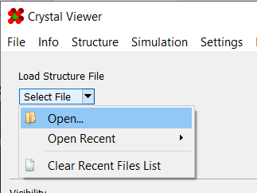
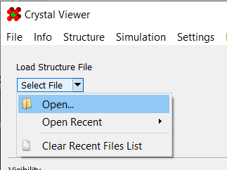
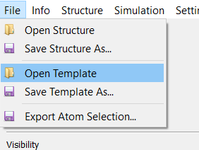
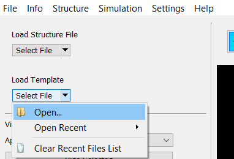
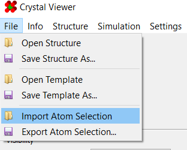
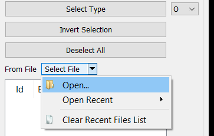
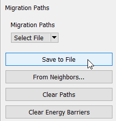
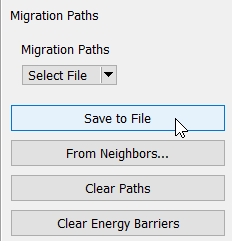

Saving and Opening Files
There are several types of files you may need to work with when using this program. These include:
Structure Files
Structure files contain raw atomic data. They may be loaded from either the menu bar or the "Load Structure File" box:
 

The following file formats are supported:
| Format | Description |
|---|---|
| .xyz | A simple table of atomic coordinates. More info on specification can be found here |
| LAMMPS .dat | Data file format used by LAMMPS. More info on specifications can be found here |
| TAD3 .dat | Data file format used by the TAD3 simulator. |
It is worth noting that the program can import some types of information from a .xyz
file's comment line (second line of the file). Any such information is expected to take the
format of comma-separated key: value pairs. For example:
Foo: 10, Bar: -0.12
Currently, the only information that will be read is bounding box information. The expected format for this takes the form:
xlo: -40.2, xhi: 57.5, ylo: -1.0, yhi: 53.7, zlo: -1.0, zhi: 53.7
Finally, the program supports loading multiple structures from a single .xyz file. When
doing so, they will be loaded in timeline mode. In such cases, it is expected that the
structures are simply concatenated together in the .xyz file.
Template Files
Template files contain the complete internal state of a structure. This includes atomic data, migration paths/barriers, atom selections, atom visibilities, and more. They are stored as gzip-compressed JSON tags of key-value pairs. They may be loaded from either the menu bar or the "Load Template File" box:
 
The following file formats are supported:
| Format | Description |
|---|---|
| .gz | gzipped-compressed JSON file |
| .json | Uncompressed JSON file |
Atom Lists
Atom list files are used to select groups of atoms from a given list. The files are formatted as a list of integers corresponding to atom ids. They may be loaded from either the menu bar or the "Select Atoms From File" box:
 
Migration Paths
Migration path files describe possible jumps between pairs of atoms. They can be saved and loaded from the "Migration Paths" panel:
 

Migration path files are formatted as .csv files, and contain two or three columns:
| Field | Description |
|---|---|
| First | ID of moving atom |
| Second | Uncompressed JSON file |
| Boundary Crossing Flags | Optional. See below. |
The boundary flags, if provided, describe what periodic boundaries a path crosses. They are represented as a base-10 version of a binary number. Each bit in the binary representation corresponds to a boundary that the path crosses.
| -Z | +Z | -Y | +Y | -X | +X |
| 1 | 0 | 0 | 1 | 0 | 0 |
| 32 | 16 | 8 | 4 | 2 | 1 |
| Sum | |||||
For example, a path that crosses the +X and +Y boundaries would have a flag of 1 + 4 = 5:
| -Z | +Z | -Y | +Y | -X | +X |
| ✗ | ✗ | ✗ | ✓ | ✗ | ✓ |
| 32 | 16 | 8 | 4 | 2 | 1 |
| Sum: 4+1=5 | |||||
As an example of what a migration paths file looks like:
First, Second, Boundary Flags
1, 3, 0
2, 4, 1
Energy Barriers
An energy barrier file describes the computed energy barriers between pairs of atoms. They are generated from an NEB simulation, and can be loaded from the same location as migration paths:
Their format is similar to that of migration paths, albeit with a few additional fields:
| Field | Description |
|---|---|
| Moving Atom ID | ID of moving atom |
| Vacant Atom ID | Atom ID that was converted to vacancy |
| Energy | Energy barrier of this path |
| Starting Vacancy ID | See here |
| Boundary Crossing Flags | See above |
As an example of what an energy barriers file looks like:
Moving Atom ID, Vacant Atom ID, Starting Vacancy ID, Energy Barrier, Boundary Flags
9666, 11024, 20282, 8.76, 0
11024, 9666, 20282, 8.77, 0
Site Energies
A site energy file describes some computed energy associated with atoms in a structure. For example, it may describe the energy associated with creating a vacancy at a given position.
| Field | Description |
|---|---|
| Site | Atom ID |
| Energy | Energy associated with the atom |
As an example of what an energy barriers file looks like:
Site, Energy
1, 1.0
2, 1.5